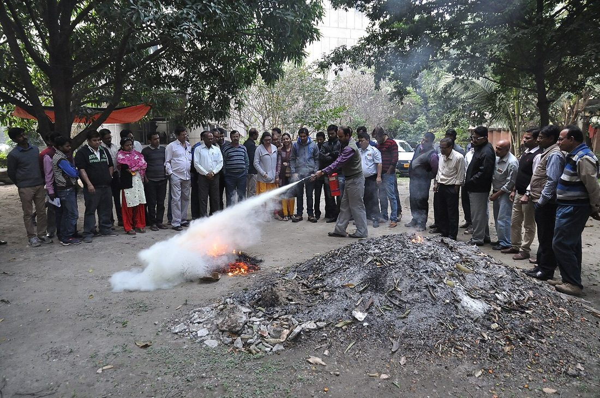

🧭 災難生存 · 實用小知識
🧯 防火與滅火基礎
戰爭中的爆炸、震後的瓦斯外洩、停電時的蠟燭與克難炊煮——火災往往是災難的「第二波」傷害，而且來得又快又猛。好消息是：多數居家火災在最初 30 秒內是可以撲滅或安全逃離的，關鍵在於你事前懂不懂。這篇教你居家防火、滅火器怎麼用、不同火災怎麼滅，以及最重要的——什麼時候該放棄滅火、立刻逃命。

▲ 滅火器操作示範——與其在火場中第一次摸索，不如平時就熟悉它的用法。圖片：Biswarup Ganguly，Wikimedia Commons，授權 CC BY 3.0。
預防勝於滅火：居家防火檢查
最好的滅火，是讓火根本燒不起來。花十分鐘檢查這些常見火源：
- 電線與插座：避免延長線串接、插座超載；老化、破皮的電線立刻更換。
- 廚房：烹煮時不離人，油鍋旁備好鍋蓋；瓦斯用畢確實關閉，定期檢查橡皮管。
- 易燃物：紙張、布料、酒精、噴霧罐遠離熱源與火源。
- 火災警報器：在臥室與走道裝設住宅用火災警報器，定期測試、每年更換電池——它能在你熟睡時救你一命。
認識火災類型：滅錯方式會更糟
不同的燃燒物要用不同方式滅，用錯反而助燃或引發爆濺：
| 類型 | 燃燒物 | 適用 | 禁忌 |
|---|
| A 類 | 木材、紙張、布料 | 水、乾粉、泡沫滅火器 | — |
| B 類 | 油類、汽油、酒精 | 乾粉、泡沫、二氧化碳、滅火毯 | 不可用水（會爆濺） |
| C 類 | 帶電的電器 | 二氧化碳、乾粉滅火器 | 不可用水（會觸電） |
| 廚房油脂 | 食用油、油鍋 | 鍋蓋悶熄、滅火毯、專用滅火器 | 絕不可用水 |
居家常備的 ABC 乾粉滅火器能應付大多數狀況，是最實用的選擇。
滅火器怎麼用：PASS 口訣
滅火器操作只有四步，記住英文口訣 PASS：
- P（拉）：拔掉保險插銷。
- A（瞄）：對準火源的根部，而不是跳動的火焰。
- S（壓）：握緊、壓下把手噴射。
- S（掃）：由近而遠、左右掃射，覆蓋整個燃燒面。
💡 站位很重要
使用時站在上風處、與火源保持約 2–3 公尺、背對逃生出口——確保萬一滅不掉，你隨時能往後撤退。一具滅火器通常只能噴約 10–20 秒，把握時間對準根部。
常見火災的正確處理
- 油鍋起火：立刻關火，用鍋蓋或沾濕的大抹布蓋住鍋口悶熄，隔絕氧氣。絕對不要澆水——熱油遇水會爆濺、火球暴衝。也別端起燒著的鍋子移動。
- 電器火災：先切斷電源（拔插頭或關總開關），再用二氧化碳或乾粉滅火器；未斷電前不可用水。
- 衣服著火：記住「停、躺、滾」——停下（別奔跑助燃）、躺下、就地翻滾壓熄火焰，或用毯子覆蓋。
最重要的一課：何時該逃，不該滅
滅火器不是萬能的，判斷「該逃」的時機，比會滅火更重要。符合以下任一條件，就立刻放棄滅火、逃生呼救：
- 火勢已超過垃圾桶大小、正在快速蔓延。
- 濃煙變濃、變黑，能見度與呼吸開始受影響。
- 一具滅火器用完仍未熄滅。
- 你背後的逃生路線可能被火或煙封住。
⚠ 濃煙比火更致命
火災中大多數傷亡並非燒傷，而是吸入濃煙與有毒氣體。煙會在幾十秒內充滿空間、讓人失去意識。所以「逃」永遠是預設選項，「滅」只在火勢極小、確有把握時才做。財物再貴，都不值得你回頭。
火場逃生要領
- 壓低身體：煙往上聚，貼近地面的空氣較乾淨，低姿勢前進。
- 摀口鼻：用濕毛巾或衣物摀住口鼻，減少吸入濃煙。
- 開門先摸門：用手背觸摸門板與門把，若燙手代表門外有火，改走其他出口。
- 隨手關門：逃出一個空間就關上門，能有效延緩火與煙蔓延、爭取時間。
- 絕不回頭：出去後就別再進去拿任何東西，到室外會合點清點人數並報案。
逃生路線與會合點應事先納入〈家庭防災計畫〉；若火災發生在震後或空襲後，也要留意結構受損（見〈地震當下與震後〉、〈空襲警報應變〉）。有人燒燙傷時，先降溫並依〈災難現場基本急救〉處理。
戰時與災後的特殊火災風險
平時的防火觀念在危機中一樣適用，但有幾個情境風險會被放大，值得特別留意：
- 震後電線走火與瓦斯外洩：地震會扯斷管線、震壞電路，是震後火災的主因。搖晃停止後先檢查、聞到瓦斯味立即關總開關並通風（見〈地震當下與震後〉）。
- 停電時的克難照明與炊煮：蠟燭、克難爐具是長期停電時的火災高風險源。用蠟燭務必遠離窗簾與易燃物、不離人；炊煮盡量在通風處，慎防一氧化碳（見〈長期停電、停水的生活對策〉）。
- 行動電源與鋰電池：受撞擊、過熱或劣質的鋰電池可能起火甚至爆炸。避免長時間充電無人看管、遠離高溫，膨脹變形的電池立即停用。
- 爆炸後的續發火災：空襲或爆炸現場常伴隨破裂管線與飛散火源，撤離時提防悶燒與復燃（見〈空襲警報應變〉）。
危機中消防救援可能無法即時抵達，社區自主的初期滅火與通報就更關鍵（見〈社區互助與鄰里防災網〉）。
住警器與逃生演練
兩件最便宜、卻最能救命的事：裝住宅用火災警報器與做逃生演練。警報器能在起火初期、你還來得及反應時就示警；而演練過的路線，能讓全家在濃煙與黑暗中憑記憶行動。建議每半年測試警報器、每年和家人走一次逃生路線，並約定兩條出口與一個室外會合點——就像地震與空襲演練一樣，練過的動作才靠得住。
✅ 居家防火自我檢查
- 火災警報器裝了嗎？上次測試是什麼時候？
- 家裡有滅火器嗎？我會用嗎？在效期內嗎？
- 延長線有沒有超載、電線有沒有破皮？
- 全家知道兩條逃生路線與室外會合點嗎？
常見問答 FAQ
Q1. 滅火器怎麼用？
記住 PASS：拉插銷、瞄根部、壓把手、左右掃。站上風處、背對出口。
Q2. 油鍋起火能澆水嗎？
絕對不行。關火後用鍋蓋或濕抹布悶熄；澆水會讓熱油爆濺、火勢暴衝。
Q3. 何時該滅、何時該逃？
火勢小於垃圾桶、背後有退路、有合適器材時才滅；一旦蔓延、濃煙變濃或滅火器用完未熄，立刻逃。
Q4. 火場逃生注意什麼？
壓低身體、摀口鼻、開門先用手背摸門、隨手關門、絕不回頭。濃煙比火更致命。
Q5. 家裡該備哪些防火設備？
住宅用火災警報器（定期測試）、一具 ABC 滅火器並學會用、廚房滅火毯，並規劃逃生路線。
權威來源
※ 本文為一般防火與逃生參考，整理自內政部消防署、NFPA、Ready.gov 等公開資訊，不能取代官方即時指示與專業消防指導。火災時請以生命安全為第一優先，儘速逃生並撥打 119。